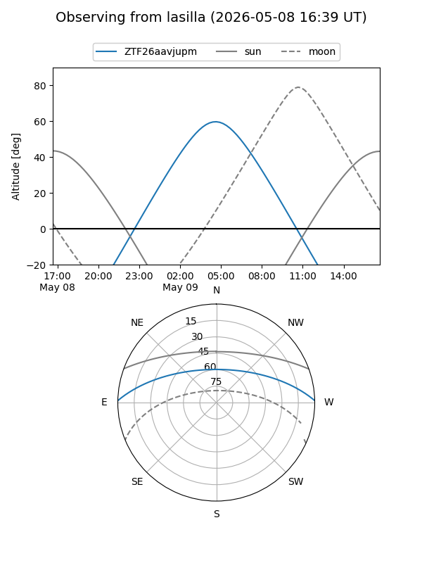
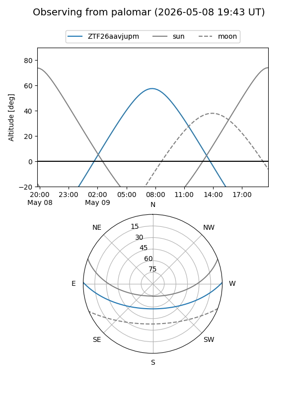

ZTF26aavjupm
Target ZTF26aavjupm at 2026-05-09 09:24
Aliases and brokers:
FINK: link
Lasair: link
ALeRCE: link
alt names
ZTF26aavjupm (ztf,fink_ztf)
Coordinates:
equatorial (ra, dec) = 224.9796,+1.09234
equatorial (HMS+DMS) = 14:59:55.11,+01:05:32.44
galactic (l, b) = (358.1552,+49.66897)
Flags:
Photometry:
last ztfg=19.95
1 ztfg detections
Lightcurve
Visibility


Additional plots